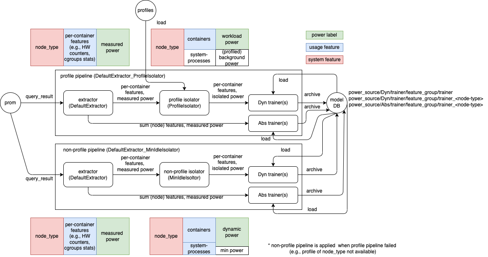

Training Pipeline
Kepler forms multiple groups of machines (nodes) based on its benchmark performance and trains a model separately for each group. The identified group is exported as node_type.
For each node_type, there are two kinds of power model (output), AbsPower and DynPower, being trained with different groups of features (input).
Model Output Type
AbsPower: the predicted power is a node power that includes nearly-static power at idling state and dynamic power when running the process on the machine.
DynPower: the predicted power is per-process/per-container power that excludes nearly-static power at idling state.
Model Features
The features are groupped by the metric sources.
Feature group:
| Group Name | Features | Metric Source(s) |
|---|---|---|
| CounterOnly | COUNTER_FEAUTRES | Hardware Counter |
| CgroupOnly | CGROUP_FEATURES | cGroups |
| BPFOnly | BPF_FEATURES | BPF |
| KubeletOnly | KUBELET_FEATURES | Kubelet |
| IRQOnly | IRQ_FEATURES | BPF |
| CounterIRQCombined | COUNTER_FEAUTRES, IRQ_FEATURES | BPF and Hardware Counter |
| WorkloadOnly | COUNTER_FEAUTRES, CGROUP_FEATURES, BPF_FEATURES, IRQ_FEATURES, KUBELET_FEATURES | All except node information |
| Full | WORKLOAD_FEATURES, SYSTEM_FEATURES | All |
Pipeline
A training pipeline starts from reading the Kepler-exporting metrics from Prometheus query (prom) and finally submits an archived models to the model database (model DB). The pipeline is generally composed of one extractor, one isolator, and multiple trainers. Extractor extracts data from the query result for each feature group attached with measured power of each components (e.g., core, dram, package, uncore, platform). Isolator further removed the nearly-static power at idling state which is unrelated to the process/container from the extracted results. The output from isolator is used by DynPower trainers while AbsPower trainers directly use the output from extractor.
In the current implementation, there are two default active pipelines as shown below.

Extractor
From Kepler queries, the default extractor generates a dataframe with the following columns.
| timestamp | features | labels[unit]_[#unit]_[component]_power | node type |
|---|---|---|---|
| timestamp | e.g., cgroupfs_cpu_usage_us cgroupfs_memory_usage_bytes cgroupfs_system_cpu_usage_us cgroupfs_user_cpu_usage_us |
e.g., package_0_package_power package_1_package_power package_0_core_power package_1_core_power package_0_uncore_power package_1_uncore_power package_0_dram_power package_1_dram_power |
node_type |
Isolator
There are two available isolators: ProfileIsolator and MinIdleIsolator.
ProfileIsolator relies on profiled background powers (profiles) and removes resource usages by system processes from the training while MinIdleIsolator assumes minimum power as an idle power and includes resource usages by system processes in the training.
The pipeline with ProfileIsolator will be applied first if the profile that matches the training node_type is available. Otherwise, the other pipeline will be applied.
(check how profiles are generated here)
Trainer
Trainers implements Trainer class (with 9 abstract methods). The common process for each node_type is to
-
load previous checkpoint model via implemented
(i) load_local_checkpointor(ii) load_remote_checkpoint. If the checkpoint cannot be loaded, initialize the model by calling implemented(iii) init_model. -
load and apply scaler to input data
-
call implemented
(iv) trainand save the checkpoint via(v) save_checkpoint -
check whether to achive the model and push to database via
(vi) should_archive. If yes,4.1. get triner-specific basic metdata via
(vii) get_basic_metadata4.2. fill with required metadata, save it as metadata file (metadata.json)
4.3. call
(viii) save_model4.4. If
(iv) get_weight_dictfunction is implemented (only for linear regression based trainer), the weight dict will be saved in the file namedweight.json.4.5. archive the model folder. The model name will be in the format
<trainer class>_<node_type>.4.6. push the archived model and
weight.json(if available) to the database
If the trainer is based on scikit-learn, consider implementing only init_model method of ScikitTrainer.
The intermediate checkpoint and output of model will be saved locally in folder MODEL_PATH/<PowerSource>/<ModelOutputType>/<FeatureGroup>. The default MODEL_PATH is src/models.